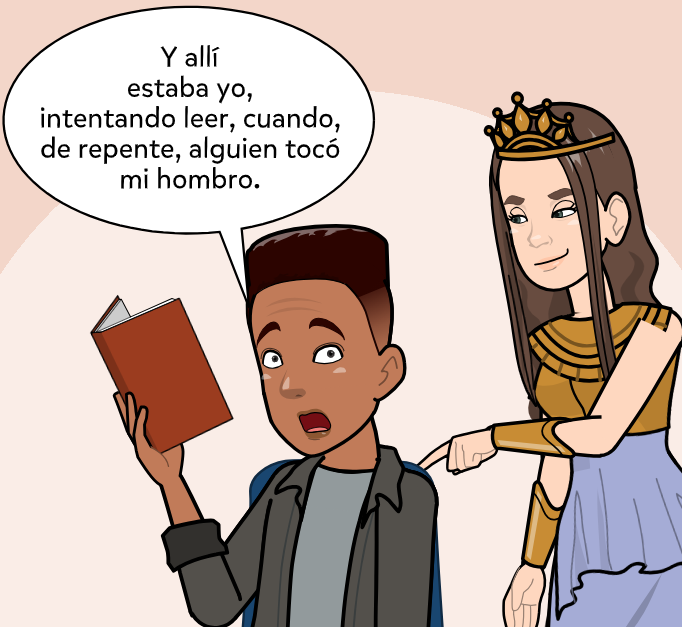
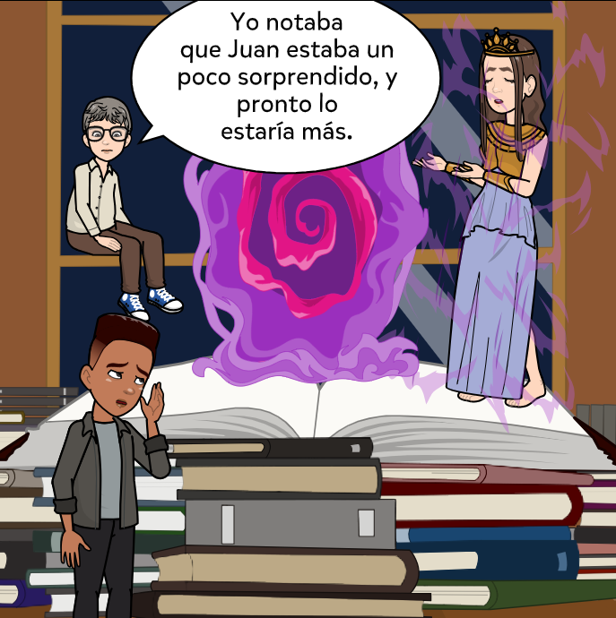
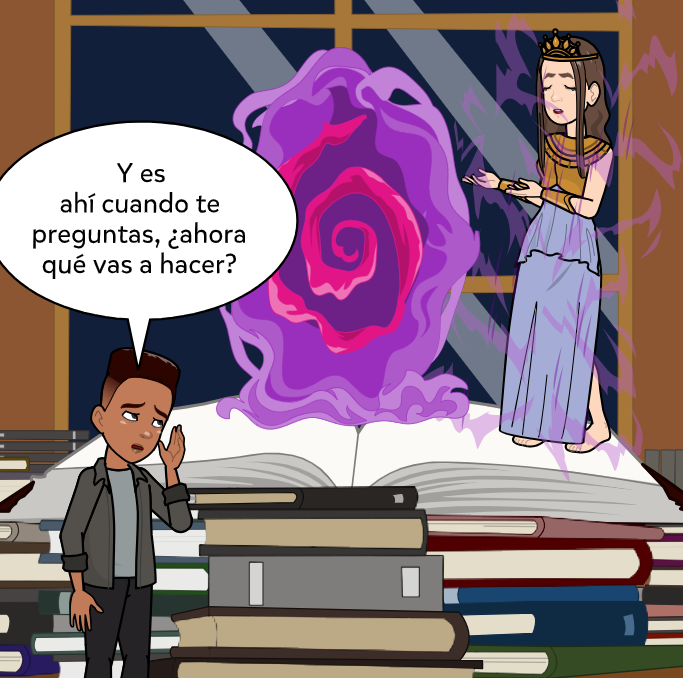
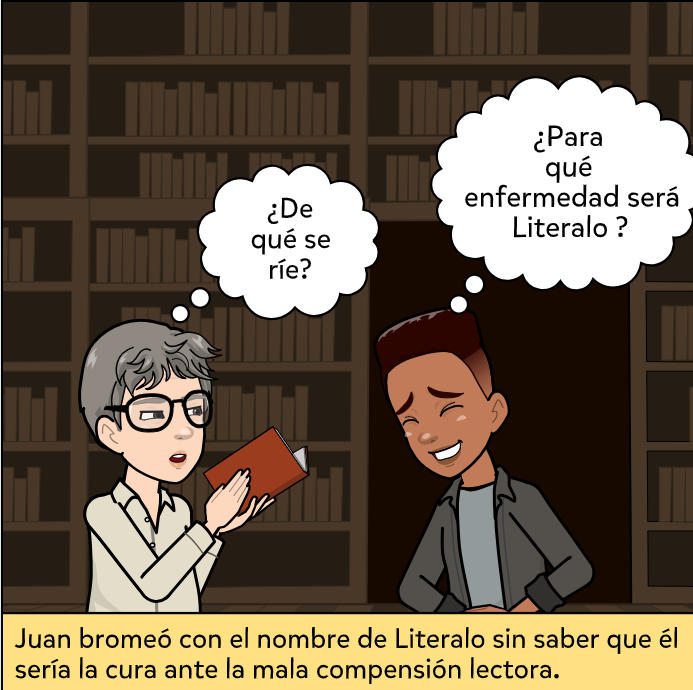
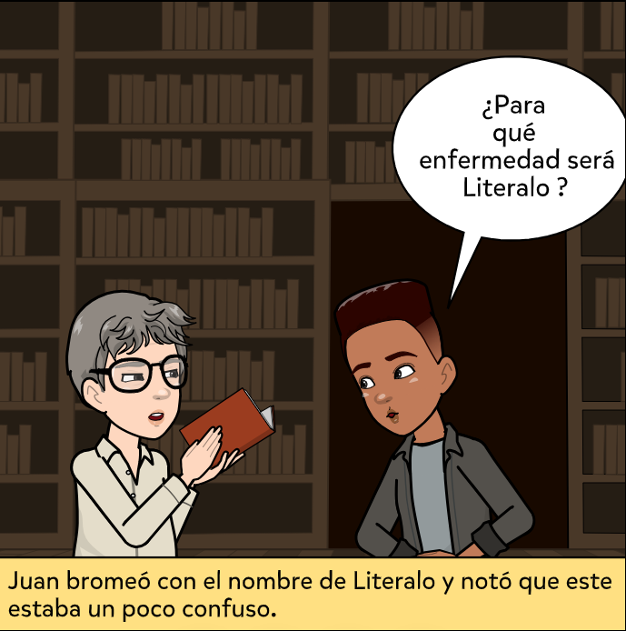

Una vez que has leído el cuento e identificado en él personajes, lugares, párrafos imporntates y su estuctura (inicio, nudo, desenlace),y además has realizado paráfrasis por cada punto de esta última, para realizar un resumen deberás leer nuevamente el texto pero esta vez de un modo más detenido y teniendo presente:
- Reducir la información de las paráfrasis realizadas.
- Volver a leer relacionando la información reducida de las paráfrasis con el resto del contenido del texto.
- Resaltar ideas principales. Y si son muy extensas señalar con una línea vertical el párrafo o párrafos que contienen la o las ideas principales.
- Escribir en el margen derecho de las ideas principales extensas señaladas la información principal de los párrafos. Ten presente reducir la información a lo principal, y si es necesario resaltar palabras o frases clave que te ayuden a complementar tu comentario al margen.
- Anotar con difrentes números el párrafo o grupo de párrafos que te generen preguntas, ideas, o emociones. Luego escribir al margen inferior o en tu cuaderno la pregunta, idea o emoción generada con el número correspondiente en el texto.
- Escribir en la última página del texto o en tu cuaderno, preguntas, ideas o emociones generadas con la lectura general del texto. (Si las hay)
- Tener presente que el resltado de las ideas principales y las anotaciones al margen te faciliten leer el texto de un modo abreviado.
- Identificar el tipo de narrador implementado en el cuento y escribirlo en la primera página del mismo.
- Finalmente escribe tu resumen. Puedes iniciar por poner el título: Resumen de [nombre del cuento a resumir] de [apellido del escritor]. Luego puedes redactar un párrafo en el que expongas el tipo de narrador que se utiliza en el cuento, el desarrollo de las ideas principales del mismo conforme al orden en que aparece en el cuento y a su vez teniendo presente las anotaciones que has hecho al margen derecho.
- ¿No sabes qué tipos de narrador existen?
-
Aunque hay varias formas de clasificar al narrador, a continuación miraremos una según el tipo de persona empleada para narrar la historia.
1. Narrador en primera persona
Un narrador en primera persona es un personaje dentro de la historia que relata los eventos desde su propia perspectiva, utilizando pronombres como "yo", "me", "mi" "nosotros", "nosotras", "nuestras", "nuestros". El hacer uso de este narrador aporta gran subjetividad a la historia en la medida en que sus emociones, pensamientos y percepciones influyen en lo narrado. Este narrador, cabe aclarar, "no tiene por qué ser el protagonista, pero sí es uno de los personajes principales" (UNIR, 2021, párr. 6), por lo atnerior, puede darse tres casos:
Primer caso: narrador protagonista.
En este caso, el narrador cuenta la historia desde su perspectiva y desde su rol de protagonista principal (UNIR, 2021). Por ejemplo, si pensamos, por ejemplo, en la historía del Universo de Kritkland, habría un narrador en protagonista si Juan narrara su historia, como se ilustra a continuación.

Ahora bien, un ejemplo en narrativa sería el siguiente:
“…y allí estaba mi Lo, con su belleza marchita, sus manos adultas y llenas de gruesas venas, sus brazos blancos con la carne de gallina, sus orejas lisas, sus axilas descuidadas. Allí estaba mi Lolita, definitivamente ajada a los diecisiete años, con aquella criatura que ya soñaba en su vientre con tener éxito en la vida, hacer mucho dinero y retirarse hacia el 2020 después de Cristo.”
Lolita, Vladimir Nabokov1. Narrador en primera persona.
Segundo caso: narrador testigo.
Este tipo narrador es quien a través de su perspectiva subjetiva narra una historia que no es la suya. Por ejemplo, si la historia del Universo de Critikland fuese narrada desde la perspectiva de Literalo, estaríamos ante un narrador en primera persona testigo.

Ejemplo en la literatura:
... Sé que están allí porque Kirsten vino hoy a mediodía a buscar a Montes a la oficina y los vi irse caminando hacia Retiro, y porque ella vino con su cara de lluvia; una cara de estatua de invierno, cara de alguien que se quedó dormido y no cerró los ojos bajo la lluvia. Kirsten es gruesa, pecosa, endurecida; tal vez tenga ya olor a bodega, a red de pescadores; tal vez llegará a tener el olor inmóvil de establo y de crema que imagino deber haber en su país.
Esbjerg, en la costa. Juan Carlos Onetti.En este caso el narrador testigo, del quien se desconoce su nombre, narra la historia de Kristen y Montes.
2. Narrador en segunda persona.
En este tipo de narración el narrador se dirige a un tú/usted, vosotros/ustedes, en ocasiones con el ánimo de hacer partícipe al lector de la historia. No obstante, su uso es poco frecuente y a veces confuso (UNIR, 2021). Suele utilizarse recursos como "autoinvocación en segunda persona", que es cuando alguien se refiere a sí mismo pero utilizando pronombres de la segunda persona, tal y como si estuviera hablando con alguien, o, realizar la narración mediante una carta. Si imaginamos, nuevamente en la historia del Universo de Critikland que, por ejemplo, Juan, al referirse a su historia utiliza la segunda persona, estaríamos ante un narrador en segunda persona. Miremos.

Un ejemplo en la literatura en formato epistolar:
Usted ha de amar el bello armario de su dormitorio, con la gran puerta que se abre generosa, las tablas vacías a la espera de mi ropa. Ahora los tengo ahí. Ahí dentro. Verdad que parece imposible; ni Sara lo creería.
Carta a una señorita en París. Julio Cortázar3. Narrador en tercera persona.
Este tipo de narrador narra la historia desde una perspectiva externa, sin intervenir o interviniendo lo menos posible (UNIR,2021), ello permite dotar a la historia de cierta objetividad.
Este tipo de narrador puede darse de dos diferentes modos.
Primer modo: narrador omnisciente.
¿Has escuchado que Dios es omnisciente porque lo sabe todo? Del mismo modo el narrador en tercera persona omnisciente cuenta la historia desde una perspectiva impersonal desde la cual sabe todo los detalles de la historia, sabe qué piensan, imaginan o sienten los personajes, así como lo que pasa e incluso pasará en la historia. Como podrás inferir, la historia del Universo de Filoland es narrada desde este modo. Por ejemplo:

Ejemplo en la literatura:
Todos los ojos le miraban. Notó Daniel, el Mochuelo, en sí, las miradas de los demás, con la misma sensación física que percibía las gotas de la lluvia. Pero no le importó. Casi sintió un orgullo tan grande como la tarde que trepó a lo alto de la cucaña al sacar de su bolsillo la moneda reluciente, con el agujerito en medio , y arrojarla sobre la arpillera.
El camino. Miguel Delibes3. Narrador en tercera persona.
Segundo modo: narrador equisciente:
Este narrador en tercera persona tiene un conocimiento limitado de la historia. Podemos imaginarlo como si fuese una cámara que registrase lo que está viendo en escena. Si la historia de Filoland fuera narrada bajo este modo de narrador, la escena antes mostrada cambiaría de la siguiente manera:

Cómo se puede notar, aquí no se predice que va a pasar en un futuro, solo reporta lo que está pasando en la presente escena.
Ejemplo en la literatura:
Cuando Gregorio Samsa despertó aquella mañana luego de un agitado sueño, se encontró en su cama convertido en un insecto monstruoso. Estaba echado sobre el córneo caparazón de su espalda y al levantar un poco la cabeza, contempló la figura convexa de su oscuro vientre.
La Metamorfosis. Franz Kafka
| Tipo de narrador según la persona empleada. | Modo | Definición. |
| Primera persona. | Narrador protagonista. | El narrador es el personaje principal de la historia y narra los eventos desde su propia experiencia. Utiliza la conjugación de la primer persona (yo) para narrar la historia. |
| Narrador testigo. | El narrador es un personaje secundario que observa los eventos desde una perspectiva limitada. Utiliza la conjugación de la primer persona (yo) para narrar la historia. | |
| Segunda persona. | El narrador utiliza el pronombre "tú" para dirigirse directamente al lector, involucrándolo en la historia. | |
| Tercera persona: | Narrador omnisciente | El narrador tiene conocimiento completo de los eventos, incluyendo los pensamientos y emociones de los personajes. Tiene una visión externa de los hechos, no se involucra en lo narrado. |
| Narrador equisciente. | El narrador tiene un conocimiento limitado de los eventos, generalmente se dedica a reportar lo que sucede en una escena en presente. Tiene una visión externa de los hechos, no se involucra en lo narrado. |